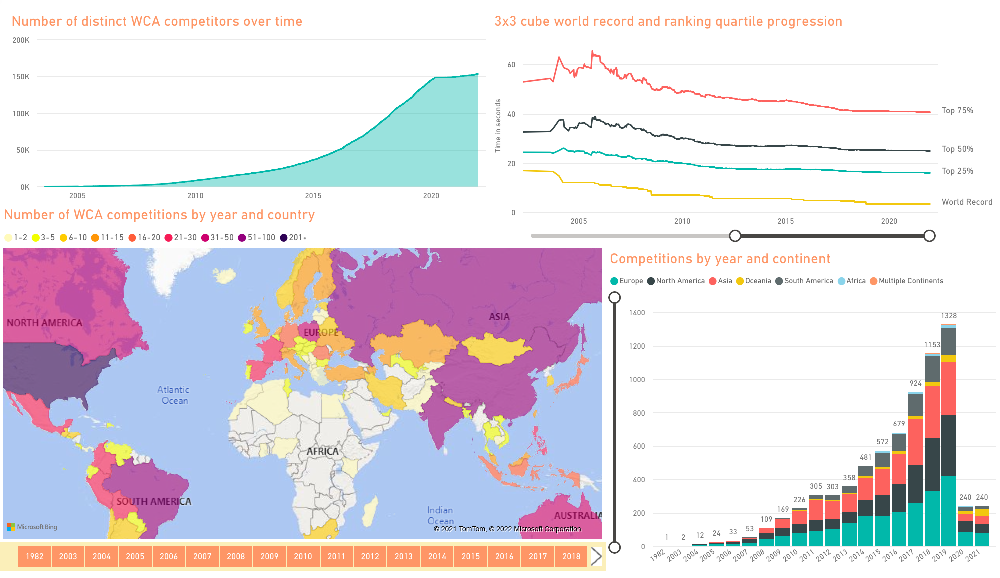
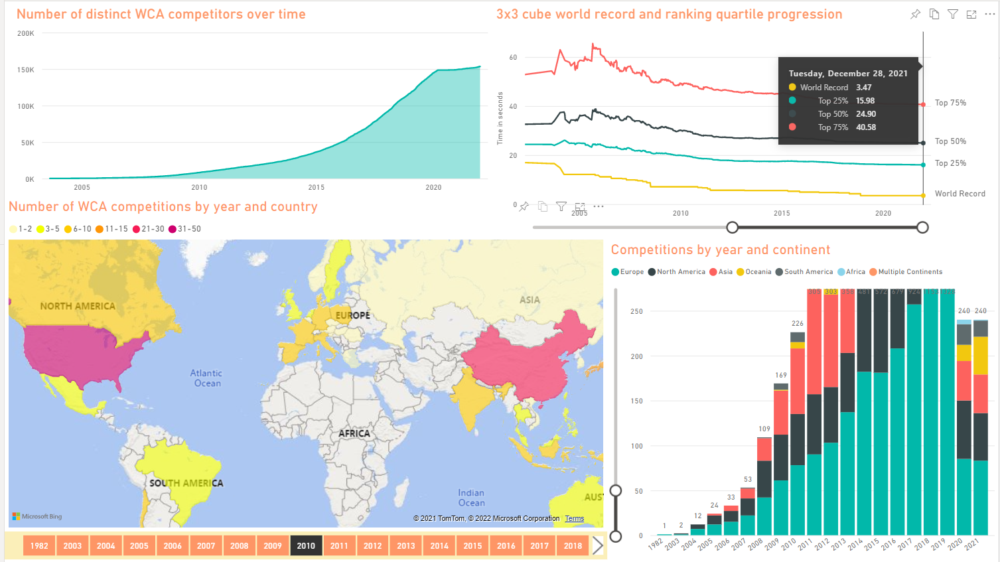

Introduction
Since 2019, I've done a fair amount of data analysis on the World Cube Association database. This includes answering to a lot of statistics requests presented by the WCA community, as well as personal projects. I've also worked as a WCA staff member in the Results Team that is responsible for the contents of the database. The analysis has been focused around SQL, but I've also made use of for example Python and Power BI.
Below are screenshots of a Power BI dashboard I built for visualizing the growth of the WCA. I analyzed the number of organized WCA competitions by region and year, as well as the growth of the competitor base. The effects of the COVID-19 pandemic can be seen very well in both.
Fastest Rubik's Cube (3x3) solve is widely considered as the single most important result from WCA competitions. With Python, I prepared the progression of World Records and quartiles of 3x3 cube rankings. Links to the Python code and MySQL data preparations can be found in the header.
Power BI dashboard

Tableau map
Here is another map I built a while ago. The countries are colored based on how long ago the first competition in that country was. We can see that the competitions have been around in Europe and North America the longest. Africa has had competitions in very small portion of the countries, but besides that, the WCA has expanded very effectively worldwide.
The numbers tell the number of individual people that have competed in that country. The largest competitor bases can be found in the USA and China.